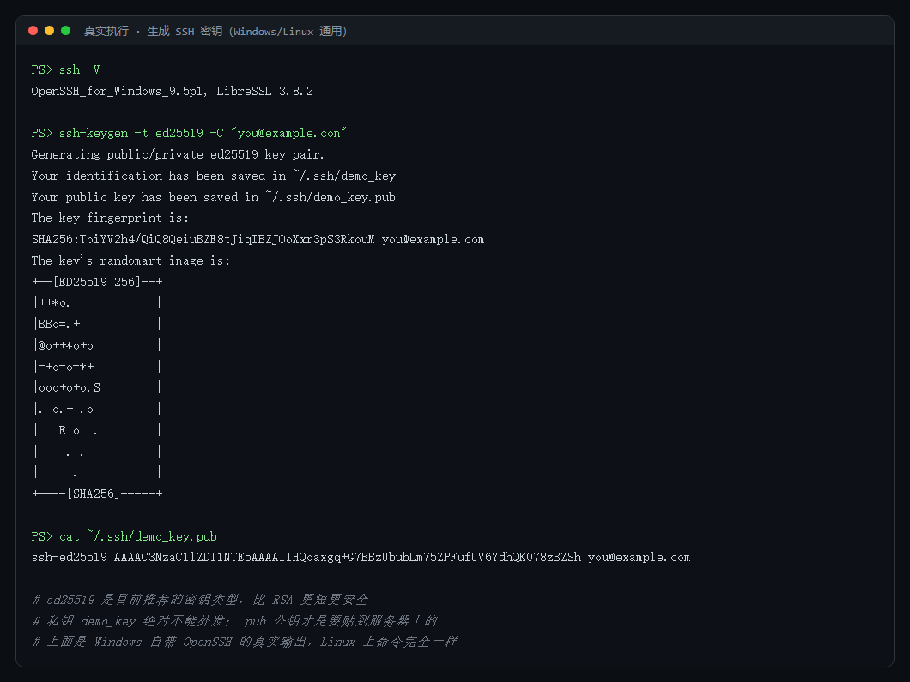
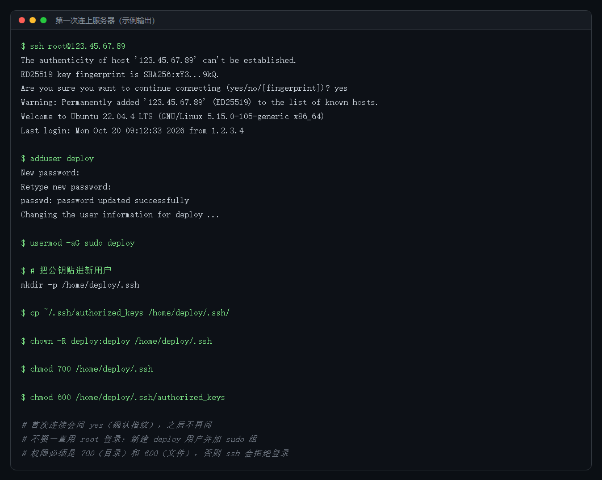
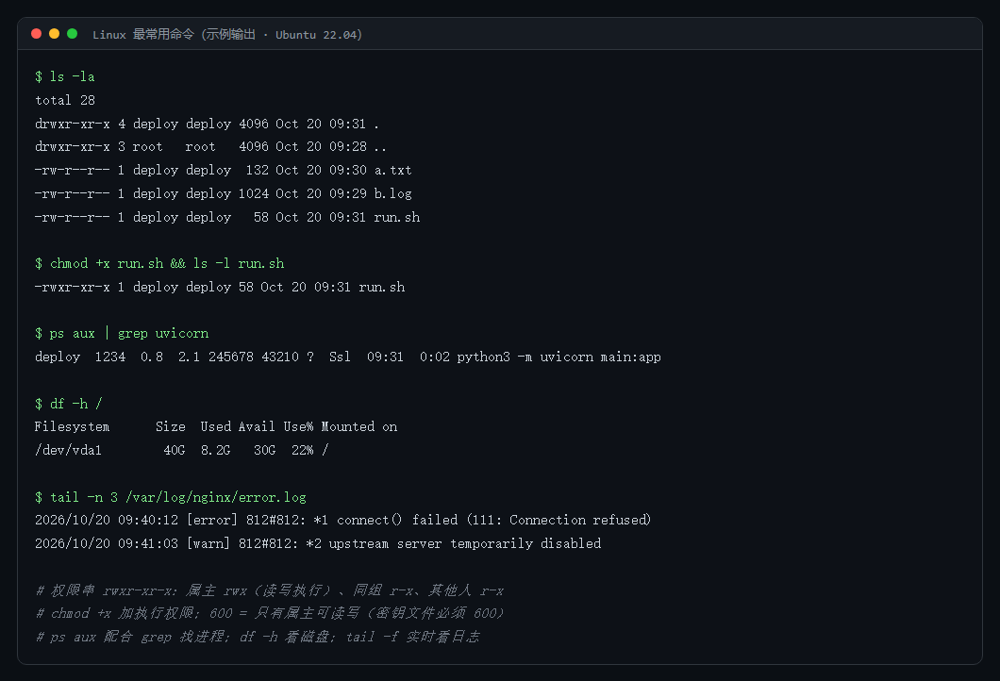
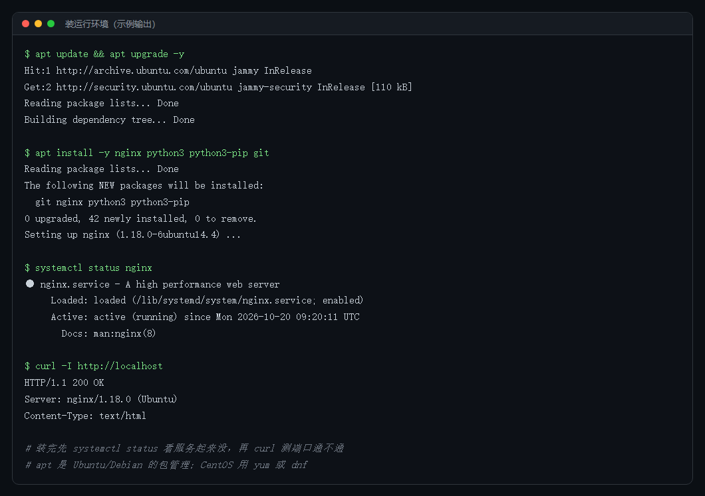
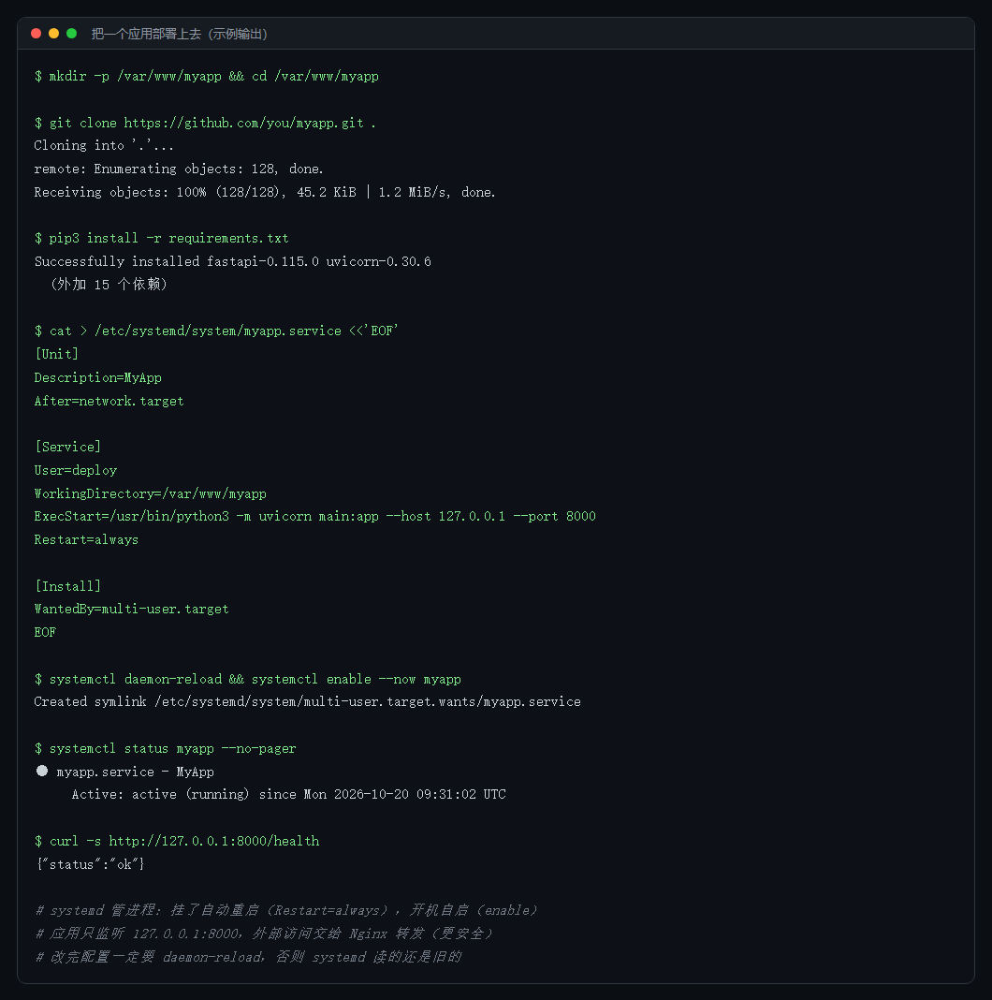
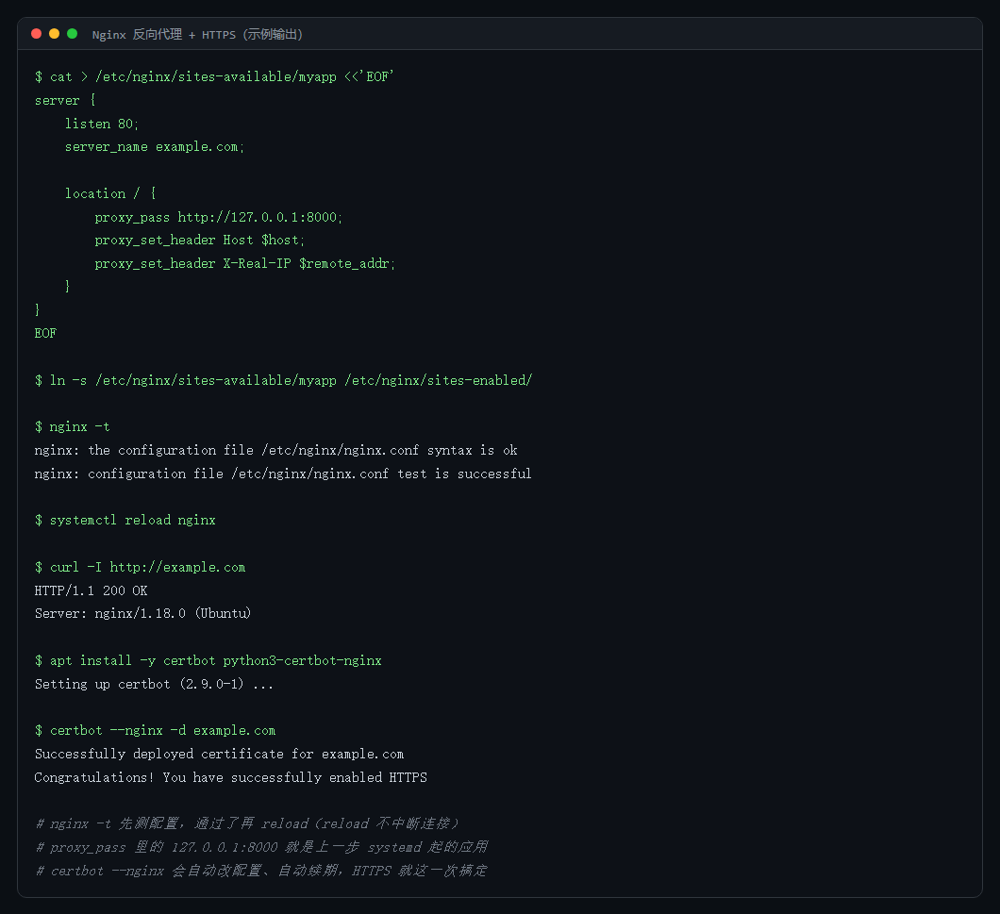
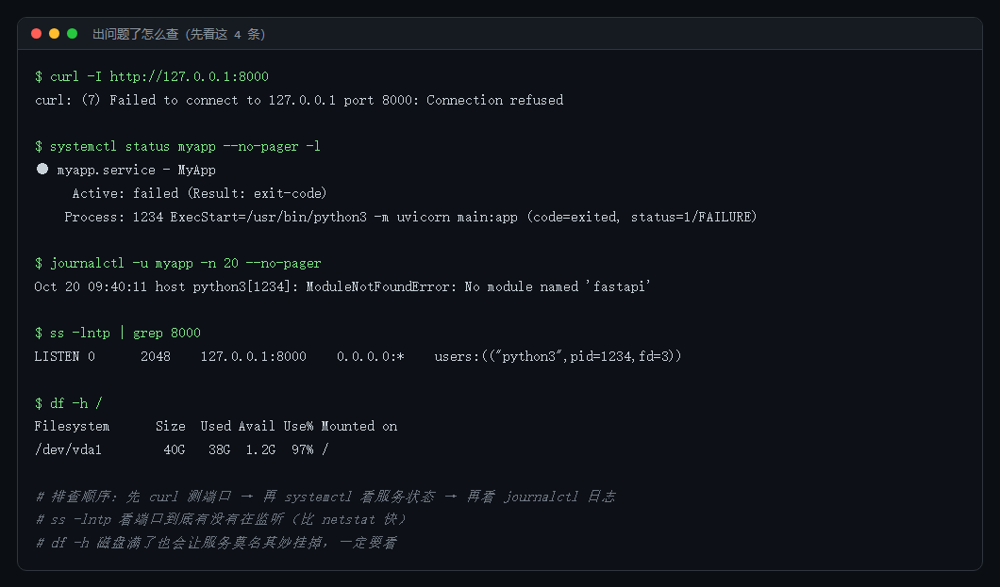
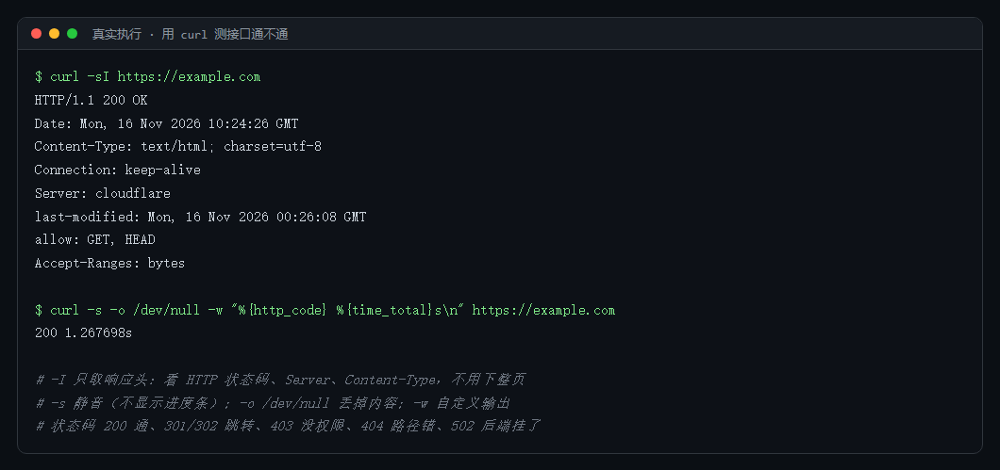

云服务器 + Linux 部署
从买一台服务器，到把自己的项目跑在公网上
0 全流程地图
先看清楚整条路，再一步步做。顺序错了会反复返工。
买服务器 → 连上去 → 建普通用户 → 配密钥登录
↓
装环境（Nginx / Python / 数据库）
↓
上传代码 → systemd 托管进程 → Nginx 反向代理
↓
绑域名 → 备案（国内机）→ 申请 HTTPS 证书
↓
出问题：curl 测端口 → systemctl 看状态 → journalctl 看日志🧭 新手最容易乱的地方是"跳过第 2 步直接改配置"。先把登录方式弄稳，后面才不会把自己锁在外面。
1 买一台云服务器
不用买贵的。一个个人项目，最低配就够。
| 项目 | 怎么选 | 说明 |
|---|---|---|
| 厂商 | 阿里云 / 腾讯云 / 华为云 | 选「轻量应用服务器」，比 ECS/CVM 便宜好管 |
| 配置 | 2 核 2G 起步 | 跑一个网站完全够；要跑数据库就 2 核 4G |
| 系统 | Ubuntu 22.04 / 24.04 LTS | LTS 支持久、教程最多 |
| 带宽 | 3–5 Mbps 或按流量 | 小站够用；图片多再升 |
| 地域 | 离用户近 | 国内用户选华东/华北 |
| 价格 | 新用户活动 几十–百元/年 | 续费会涨价，注意看清 |
⚠️ 国内服务器绑域名必须备案（免费，但要 1–20 个工作日）。
不想备案：用香港/海外节点，但国内访问会慢一些。
不想备案：用香港/海外节点，但国内访问会慢一些。
🔐 买完第一件事：去安全组/防火墙放行端口。默认一般只开 22；网站要开
80 和 443，否则你配好了也访问不到。2 连上去（SSH）
用密钥登录，比密码安全得多。密钥在本机生成，公钥传到服务器。
2.1 先生成密钥（真实截图）

Windows 自带 OpenSSH 的真实输出，Linux 上命令完全一样
| 文件 | 是什么 | 怎么处理 |
|---|---|---|
demo_key | 私钥 | 绝对不外发，留在本机 |
demo_key.pub | 公钥 | 贴到服务器 ~/.ssh/authorized_keys |
2.2 第一次登录 + 建普通用户（示例输出）

示例输出：首次连接确认指纹、新建用户、配密钥权限
1
ssh root@你的IP —— 第一次会问 yes/no，输 yes
2
adduser deploy 建普通用户，usermod -aG sudo deploy 给管理权限
3
把公钥放进 /home/deploy/.ssh/authorized_keys
4
权限必须是 700 和 600，否则 ssh 会拒绝登录（这一步最容易错）
🚫 改 sshd 配置前，先开第二个终端保持登录。
改错了你自己会被锁在外面，只能去云控制台重置。
改错了你自己会被锁在外面，只能去云控制台重置。
# 加固（改完先别关当前连接，另开一个窗口验证能登再关）
nano /etc/ssh/sshd_config
PermitRootLogin no # 禁止 root 直接登录
PasswordAuthentication no # 只允许密钥
Port 2222 # 可选：改端口，少被扫
systemctl restart ssh
# 然后新窗口试：ssh -p 2222 deploy@你的IP3 Linux 必会命令
不用背完。会这 20 个就能干活。

示例输出：文件、权限、进程、磁盘、日志
文件与目录
| 命令 | 作用 | 常用写法 |
|---|---|---|
ls | 列文件 | ls -la（含隐藏+详情） |
cd | 进目录 | cd /var/www、cd .. |
cp / mv / rm | 复制/移动/删除 | cp -r 源 目标、rm -rf 目录（慎用） |
cat / less | 看文件 | less 大文件.log |
tail -f | 实时看日志 | tail -f /var/log/nginx/error.log |
权限（最容易懵的一块）
-rwxr-xr-x 1 deploy deploy 58 Oct 20 09:31 run.sh
│└┬┘└┬┘└┬┘
│ │ │ └── 其他人：r-x（读+执行）
│ │ └───── 同组： r-x
│ └──────── 属主： rwx（读+写+执行）
└────────── 文件类型：- 文件 / d 目录 / l 链接
数字写法：r=4 w=2 x=1
chmod 755 xxx → rwxr-xr-x
chmod 600 key → rw------- （密钥文件必须这样）
chown deploy:deploy xxx （改属主）进程、端口、磁盘
| 想看什么 | 命令 |
|---|---|
| 有哪些进程 | ps aux | grep 关键词 |
| 谁在占 CPU/内存 | top（按 q 退出） |
| 端口有没有在听 | ss -lntp | grep 8000 |
| 磁盘还剩多少 | df -h |
| 哪个目录大 | du -sh /* | sort -h | tail |
| 服务状态/启动/重启 | systemctl status/start/restart 名字 |
4 装运行环境
Ubuntu 用 apt；装完一定要验证服务真起来了。

示例输出：更新源、装 nginx/python/git、验证服务
apt update && apt upgrade -y
# 常用三件套
apt install -y nginx git curl
# Python（Ubuntu 自带 python3，装 pip 和虚拟环境）
apt install -y python3-pip python3-venv
# Node（别用 apt 的老版本，用 nvm）
curl -o- https://raw.githubusercontent.com/nvm-sh/nvm/v0.40.1/install.sh | bash
source ~/.bashrc && nvm install 22✅ 装完马上验证：
systemctl status nginx 看 active (running)，再 curl -I http://localhost 看有没有 200。5 部署你的应用
核心就一件事：用 systemd 把进程管起来，别用 nohup 或 &。

示例输出：拉代码、装依赖、写 systemd 服务、启动验证
cd /var/www
git clone https://github.com/你/项目.git myapp
cd myapp
python3 -m venv venv && source venv/bin/activate
pip install -r requirements.txt写 systemd 服务（/etc/systemd/system/myapp.service）：
[Unit]
Description=MyApp
After=network.target
[Service]
User=deploy
WorkingDirectory=/var/www/myapp
ExecStart=/var/www/myapp/venv/bin/python -m uvicorn main:app --host 127.0.0.1 --port 8000
Restart=always
RestartSec=3
[Install]
WantedBy=multi-user.targetsystemctl daemon-reload # 改了 unit 文件必须执行
systemctl enable --now myapp # 开机自启 + 立即启动
systemctl status myapp # 看是否 active (running)
journalctl -u myapp -f # 实时看应用日志💡 为什么要 127.0.0.1 而不是 0.0.0.0？
应用只监听本机，公网访问统一走 Nginx。这样端口不外露，也更方便加 HTTPS 和限流。
应用只监听本机，公网访问统一走 Nginx。这样端口不外露，也更方便加 HTTPS 和限流。
⚠️ 虚拟环境（venv）里的 python 要写绝对路径：
/var/www/myapp/venv/bin/python。写 python 会找不到包。6 Nginx 反向代理 + HTTPS
让 80/443 端口的请求，转发到你 8000 端口的应用。

示例输出：配置反代、nginx -t 检查、reload、certbot 上 HTTPS
# /etc/nginx/sites-available/myapp
server {
listen 80;
server_name example.com; # 换成你的域名
location / {
proxy_pass http://127.0.0.1:8000;
proxy_set_header Host $host;
proxy_set_header X-Real-IP $remote_addr;
proxy_set_header X-Forwarded-For $proxy_add_x_forwarded_for;
proxy_set_header X-Forwarded-Proto $scheme;
}
}ln -s /etc/nginx/sites-available/myapp /etc/nginx/sites-enabled/
nginx -t # 先测语法，通过了再 reload
systemctl reload nginx # reload 不中断现有连接
# 上 HTTPS（自动改配置、自动续期）
apt install -y certbot python3-certbot-nginx
certbot --nginx -d example.com| 现象 | 大概率原因 |
|---|---|
| 502 Bad Gateway | 后端进程没起来 / 端口不对 —— 先 systemctl status |
| 403 Forbidden | 目录权限不对，或 Nginx 用户没读权限 |
| 404 Not Found | root/proxy_pass 路径写错 |
| 改了不生效 | 忘了 systemctl reload nginx |
| 浏览器打不开 | 安全组没放行 80/443 |
7 出问题怎么查（按这个顺序）
别乱猜。按「端口 → 服务 → 日志」三层往下查，90% 的问题能定位。

示例输出：curl 失败 → 服务 failed → 日志报错 → 端口监听 → 磁盘满
先学会用 curl 测（真实截图）

真实执行：对 example.com 发起请求，拿到真实响应头和耗时
| 状态码 | 意思 | 往哪查 |
|---|---|---|
| 200 | 通了 | —— |
| 301 / 302 | 跳转 | 看 Location 头 |
| 403 | 没权限 | 文件权限 / Nginx 配置 |
| 404 | 路径不对 | root / proxy_pass |
| 500 | 程序报错 | journalctl -u 服务名 -n 50 |
| 502 | 后端挂了 | systemctl status + 端口 |
| 504 | 后端超时 | 程序卡死 / 处理太慢 |
✅ 万能三步：
curl -I http://127.0.0.1:8000（服务本身通不通）systemctl status 服务名（进程活着没）journalctl -u 服务名 -n 50（报的什么错）8 新手必踩的坑
① 改 sshd 把自己锁在外面。改配置前另开一个终端保持登录，验证能进再关。
② 安全组没放行端口。服务起来了、本机 curl 也通，外面就是访问不到 —— 九成是安全组/防火墙。
③ 用
nohup / & 跑服务。一重启就没了。用 systemd，挂了自动拉起、开机自启。④ 忘了
daemon-reload。改了 .service 文件不 reload，systemd 用的还是旧配置。⑤ 磁盘写满。日志越积越多把盘塞满，服务开始乱挂。定期清日志，或配 logrotate。查：
df -h、du -sh /var/log/*。⑥ 数据库直接暴露公网。MySQL/Redis 只听 127.0.0.1，需要时用 SSH 隧道。暴露 6379 第二天就会被挖矿。
🚫 不要在服务器上跑
rm -rf / 这类命令，也不要用 root 跑应用。权限越小，出事损失越小。✅ 记住一条：本机
127.0.0.1 通 ≠ 公网通。本机通说明程序没问题，公网不通就是 Nginx 或安全组的问题。